Analysis of Palleja Antibiotic Exposure data
2026-04-24
Run Sylph v0.8.0
Examples:
sylph profile ../db/gtdb_95_ordered_DB/gtdb_ordered_95.syldb -u --read-seq-id 99.9 -t 8 -1 ./*_1.fastq.gz -2 /*_2.fastq.gz -o palleja_p_95.tsv
sylph query ../db/gtdb_99_ordered_DB/gtdb_ordered_99.syldb -u --read-seq-id 99.9 -t 8 -1 ./*_1.fastq.gz -2 /*_2.fastq.gz -o palleja_q_99.tsvLoad deps
library(tidyverse)
library(data.table)
library(ggbeeswarm)
library(ggthemes)
library(strainspy)
library(stringr)
library(SummarizedExperiment)
library(ggplot2)
library(ggsci)
library(dplyr)
library(tidyr)Load metadata and tax
meta = read.table("data/palleja_ab_recovery/metadata.tsv", header = T)
meta$days = factor(meta$days, levels = c(0, 4, 8, 42, 180))
meta$subject = factor(meta$subject)
meta$load = log(meta$g_load) # This is probably better representative given gut microbiome data
conv_design = as.formula('~days + (1 | subject)') # conventional without load adjustment
design = as.formula('~ days + (1|subject) + load')
# tax95 = read_taxonomy(system.file("extdata", "example_taxonomy.tsv.gz", package = "strainspy"))
tax99 = read_taxonomy("data/TAXONOMY/sylph_DB_taxonomy_99.tsv")Helper functions
cleanup = function(se, meta, min_subj = 3, min_days = 2){
colnames(se) = gsub("_1", "", colnames(se)) # Reset colnames
se = modify_metadata(se, meta)
strainspy:::filter_by_presence_longitudinal(se, subject_col = "subject",
time_col = "days",
min_subjects = min_subj,
min_timepoints = min_days)
}
viz = function(se, fit, tax){
p1 <- plot_manhattan(fit, taxonomy = tax, aggregate_by_taxa = TRUE)
p2 <- plot_manhattan(fit, taxonomy = tax, aggregate_by_taxa = FALSE)
p3 <- plot_volcano(fit, label = TRUE)
p4 <- plot_ani_dist(
se,
phenotype = 'days',
contigs = top_hits(fit)$Contig_name[1:10],
show_points = TRUE,
plot_type = 'box'
)
# Combine using patchwork
p1
p2
p3
p4
}
pool_contigs = function(fit, coef = c(2,3,4,5), alpha = 0.05){ # For baseline vs. changes
return(unique(unlist(sapply(coef, function(cf) top_hits(fit, coef = cf, alpha = alpha)$Contig_name))))
}Immediate changes following exposure
meta_pre2post = meta[meta$days == 0 | meta$days == 8, ]
se_p = cleanup(read_sylph("data/palleja_ab_recovery/combined_p_95.tsv"), meta)## Detected Sylph profile output file.
## Retained 371 rows after subject-aware filteringse_q = cleanup(read_sylph("data/palleja_ab_recovery/combined_q_99.tsv"), meta)## Detected Sylph query output file.
## Retained 15802 rows after subject-aware filteringFit to query
save_path <- "output_rds/palleja_zib_q_99.rds"
if(file.exists(save_path)){
fit_zib_q <- readRDS(save_path)
} else {
ebp_q = compute_eb_priors(se = se_q, design = as.formula('~ days'),
nthreads = parallel::detectCores(), low_cutoff = 0, high_cutoff = Inf)
fit_zib_q = glmZiBFit(se_q, conv_design, nthreads = parallel::detectCores(), MAP_prior = ebp_q)
saveRDS(fit_zib_q, save_path)
}
# Day 0 to day 8
th_q0 = top_hits(fit_zib_q, 3)## Found 484 tophits for days8 at alpha = 0.05 using holmth_q0 = comp_ani_diff_and_posthoc_test(se = se_q, fit = fit_zib_q, th = th_q0)## | | | 0% | | | 1% | |= | 1% | |= | 2% | |== | 2% | |== | 3% | |== | 4% | |=== | 4% | |=== | 5% | |==== | 5% | |==== | 6% | |===== | 7% | |===== | 8% | |====== | 8% | |====== | 9% | |======= | 9% | |======= | 10% | |======= | 11% | |======== | 11% | |======== | 12% | |========= | 12% | |========= | 13% | |========== | 14% | |========== | 15% | |=========== | 15% | |=========== | 16% | |============ | 17% | |============ | 18% | |============= | 18% | |============= | 19% | |============== | 19% | |============== | 20% | |============== | 21% | |=============== | 21% | |=============== | 22% | |================ | 22% | |================ | 23% | |================ | 24% | |================= | 24% | |================= | 25% | |================== | 25% | |================== | 26% | |=================== | 26% | |=================== | 27% | |=================== | 28% | |==================== | 28% | |==================== | 29% | |===================== | 29% | |===================== | 30% | |===================== | 31% | |====================== | 31% | |====================== | 32% | |======================= | 32% | |======================= | 33% | |======================== | 34% | |======================== | 35% | |========================= | 35% | |========================= | 36% | |========================== | 37% | |========================== | 38% | |=========================== | 38% | |=========================== | 39% | |============================ | 39% | |============================ | 40% | |============================ | 41% | |============================= | 41% | |============================= | 42% | |============================== | 42% | |============================== | 43% | |=============================== | 44% | |=============================== | 45% | |================================ | 45% | |================================ | 46% | |================================= | 46% | |================================= | 47% | |================================= | 48% | |================================== | 48% | |================================== | 49% | |=================================== | 49% | |=================================== | 50% | |=================================== | 51% | |==================================== | 51% | |==================================== | 52% | |===================================== | 52% | |===================================== | 53% | |===================================== | 54% | |====================================== | 54% | |====================================== | 55% | |======================================= | 55% | |======================================= | 56% | |======================================== | 57% | |======================================== | 58% | |========================================= | 58% | |========================================= | 59% | |========================================== | 59% | |========================================== | 60% | |========================================== | 61% | |=========================================== | 61% | |=========================================== | 62% | |============================================ | 62% | |============================================ | 63% | |============================================= | 64% | |============================================= | 65% | |============================================== | 65% | |============================================== | 66% | |=============================================== | 67% | |=============================================== | 68% | |================================================ | 68% | |================================================ | 69% | |================================================= | 69% | |================================================= | 70% | |================================================= | 71% | |================================================== | 71% | |================================================== | 72% | |=================================================== | 72% | |=================================================== | 73% | |=================================================== | 74% | |==================================================== | 74% | |==================================================== | 75% | |===================================================== | 75% | |===================================================== | 76% | |====================================================== | 76% | |====================================================== | 77% | |====================================================== | 78% | |======================================================= | 78% | |======================================================= | 79% | |======================================================== | 79% | |======================================================== | 80% | |======================================================== | 81% | |========================================================= | 81% | |========================================================= | 82% | |========================================================== | 82% | |========================================================== | 83% | |=========================================================== | 84% | |=========================================================== | 85% | |============================================================ | 85% | |============================================================ | 86% | |============================================================= | 87% | |============================================================= | 88% | |============================================================== | 88% | |============================================================== | 89% | |=============================================================== | 89% | |=============================================================== | 90% | |=============================================================== | 91% | |================================================================ | 91% | |================================================================ | 92% | |================================================================= | 92% | |================================================================= | 93% | |================================================================== | 94% | |================================================================== | 95% | |=================================================================== | 95% | |=================================================================== | 96% | |==================================================================== | 96% | |==================================================================== | 97% | |==================================================================== | 98% | |===================================================================== | 98% | |===================================================================== | 99% | |======================================================================| 99% | |======================================================================| 100%th_q = th_q0[is.na(th_q0$Comment), ]
# Reorder so that the highest ani difference ones come on top
th_q <- th_q %>%
dplyr::arrange(
desc(abs(ANI_Difference))
)
th_q = strainspy:::add_tax2tophits(th_q, tax99)
plt_idx = c(1,11,14,35, 62, 169) # Picking different species
plot_ani_dist(se_q, 'days', th_q$Contig_name[plt_idx])## Warning: Removed 96 rows containing non-finite outside the scale range
## (`stat_boxplot()`).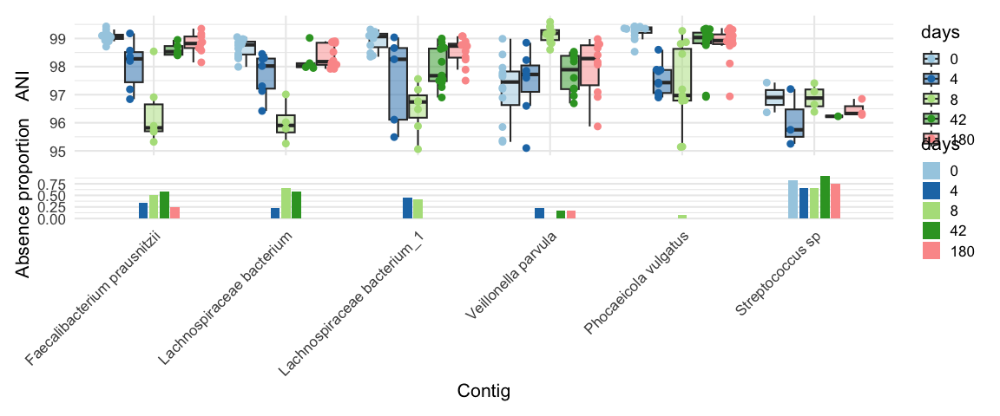
# Nice signal here:
# Veillonella sp. - 00100
# Faecalibacterium prausnitzii - 0-1-3-20Run abundance testing AKA why don’t see see E. coli in ANI testing?
E. coli shows a sharp shift in abundance in the paper (goes up after exposure and then down) - but no change in ANI. Indicative of no strain change or replacement?
se_p95_abund = cleanup(read_sylph("data/palleja_ab_recovery/combined_p_95.tsv", variable = "Taxonomic_abundance"), meta)## Detected Sylph profile output file.
## Retained 371 rows after subject-aware filteringbug = c("Veillonella", "Klebsiella pneumoniae", "Escherichia coli"); bug_i = 3
p1 = plot_ani_dist(se_p95_abund, 'days',contigs = rownames(se_p95_abund)[grep(bug[bug_i], rownames(se_p95_abund))] , show_points = TRUE,plot_type = 'box')
p2 = plot_ani_dist(se_p, 'days',contigs = rownames(se_p)[grep(bug[bug_i], rownames(se_p))] ,show_points = TRUE,plot_type = 'box')
p1-p2## Warning: Removed 10 rows containing non-finite outside the scale range
## (`stat_boxplot()`).
## Removed 10 rows containing non-finite outside the scale range
## (`stat_boxplot()`).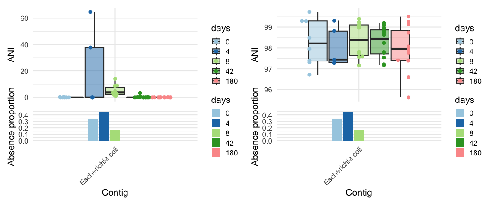
It seems that relative abundance does have the trend mentioned in the paper, but ANI is unchanged.
Check microbial load vs reported enriched low abundance commensals
summary_df <- meta %>%
group_by(days) %>%
summarise(
mean_log_gload = mean(log(g_load), na.rm = TRUE),
se_log_gload = sd(log(g_load), na.rm = TRUE) / sqrt(n())
)
ggplot() +
geom_line(data = meta, aes(x = as.numeric(days), y = log(g_load), group = subject, color = subject), linewidth = 0.8, alpha = 0.5) +
geom_point(data = meta, aes(x = as.numeric(days), y = log(g_load), color = subject), size = 3, alpha = 0.8) +
geom_line(data = summary_df, aes(x = as.numeric(days), y = mean_log_gload), linewidth = 1.2, color = "black") +
geom_ribbon(data = summary_df, aes(x = as.numeric(days), ymin = mean_log_gload - se_log_gload, ymax = mean_log_gload + se_log_gload), alpha = 0.3, fill = "grey") +
xlab("Days") +
ylab("Predicted log microbial load (Galaxy model)") +
scale_color_manual(values = c(
"#D55E00", # reddish-orange
"#0072B2", # deep blue
"#009E73", # teal/green
"#CC79A7", # magenta
"#F0E442", # yellow
"#E69F00", # orange
"#56B4E9", # sky blue
"#999999", # gray
"#A6761D", # brown
"#66CC99", # mint
"#CC6666", # muted red
"#6699CC" # muted blue
)) +
scale_x_continuous(breaks = unique(as.numeric(summary_df$days)), labels = unique(summary_df$days)) +
theme_clean(base_size = 14)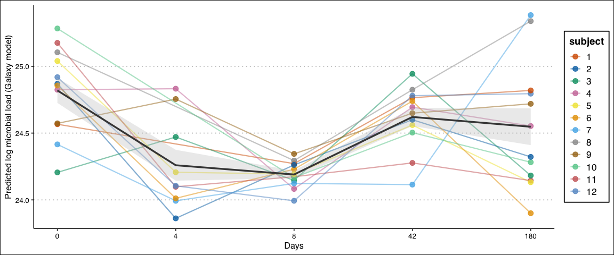
As expected microbial load goes down after antibiotic exposure. Could the relative abundance change in E. coli& be an artifact of this effect?
Perform differential abundance testing
# Helper function
generate_species_plot = function(fit_){
# Pool the stains that are different at least one day compared to baseline
plt_dat = plot_ani_dist(se_p95_abund,phenotype = 'days',contigs = pool_contigs(fit_) ,show_points = TRUE,plot_type = 'box', plot = F)
plt_dat = plt_dat %>%
group_by(Contig, days) %>%
summarise(mean_ANI = mean(ANI, na.rm = TRUE), median_ANI = median(ANI, na.rm = T), .groups = 'drop')
# Thrived
contigs_thrived <- plt_dat %>%
group_by(Contig, days) %>%
tidyr::pivot_wider(names_from = days, values_from = median_ANI) %>%
filter(`4` > `0` | `8` > `0`) %>%
pull(Contig) %>%
unique()
plt_dat$Contig = factor(plt_dat$Contig, levels = unique(plt_dat$Contig)[order(plt_dat$mean_ANI[plt_dat$days == 8], decreasing = T)])
ggplot(plt_dat, aes(x = factor(days, levels = c(0,4,8,42,180)), y = 1, fill = log10(mean_ANI))) +
geom_tile(color = "white") +
facet_wrap(~ Contig, ncol = 1, strip.position = "left") +
scale_fill_gradient(low = "white", high = "steelblue") +
labs(x = "Days", y = NULL, fill = "Mean R_ab (log10)") +
theme_minimal() +
theme(
axis.text.y = element_blank(),
axis.ticks.y = element_blank(),
strip.text.y.left = element_text(angle = 0)
)
}Model without correcting for microbial load
save_path <- "output_rds/palleja_abud_p_95_conv.rds"
if(file.exists(save_path)){
fit_ab_conv <- readRDS(save_path)
} else {
fit_ab_conv = abundanceFit(se = se_p95_abund, design = conv_design, nthreads = parallel::detectCores(), transform = 'CLR')
saveRDS(fit_ab_conv, save_path)
}
generate_species_plot(fit_ab_conv)## Found 29 tophits for days4 at alpha = 0.05 using holm
## Found 42 tophits for days8 at alpha = 0.05 using holm
## Found 18 tophits for days42 at alpha = 0.05 using holm
## Found 8 tophits for days180 at alpha = 0.05 using holm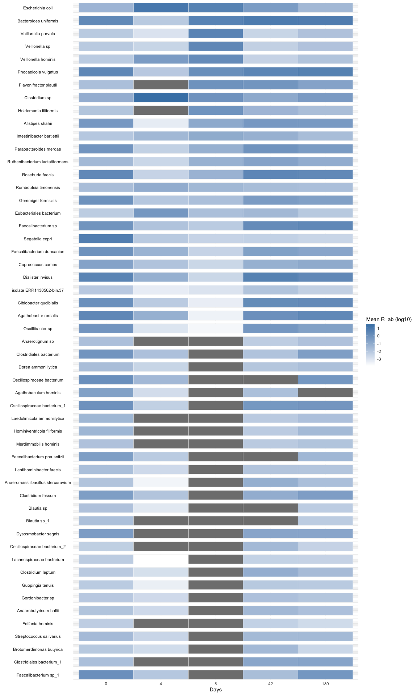
Model with load adjustment
save_path <- "output_rds/palleja_abud_p_95_load_adj.rds"
if(file.exists(save_path)){
fit_ab_load <- readRDS(save_path)
} else {
fit_ab_load = abundanceFit(se = se_p95_abund, design = design, nthreads = parallel::detectCores(), transform = 'CLR')
saveRDS(fit_ab_load, save_path)
}
generate_species_plot(fit_ab_load)## Found 18 tophits for days4 at alpha = 0.05 using holm
## Found 20 tophits for days8 at alpha = 0.05 using holm
## Found 13 tophits for days42 at alpha = 0.05 using holm
## Found 3 tophits for days180 at alpha = 0.05 using holm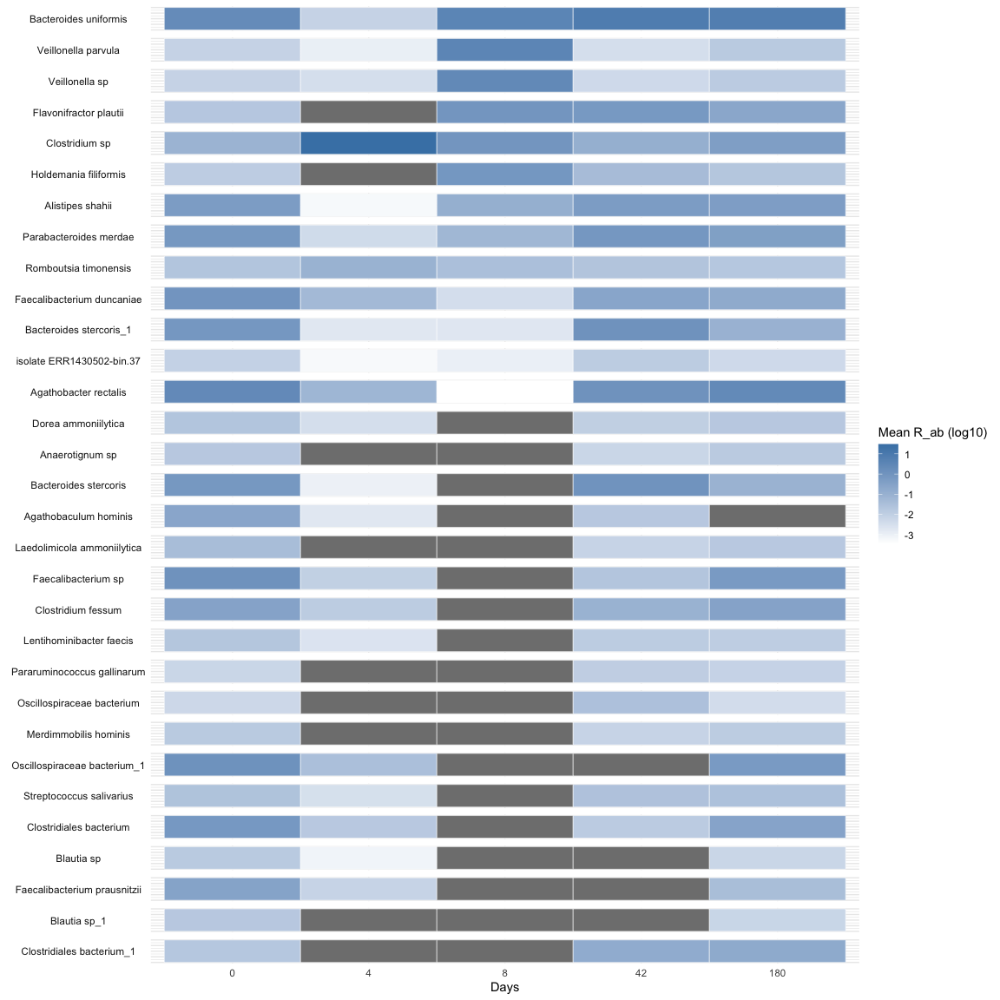
No E. coli& detected in either case, and the number of species detected is stable with and without including load as a covariate.
ANI model without load adjustment
save_path <- "output_rds/palleja_fit_p_95_conv.rds"
if(file.exists(save_path)){
fit_zib_p <- readRDS(save_path)
} else {
fit_zib_p = glmZiBFit(se = se_p, design = conv_design, nthreads = parallel::detectCores())
saveRDS(fit_zib_p, save_path)
}
generate_species_plot(fit_zib_p)## Found 59 tophits for days4 at alpha = 0.05 using holm
## Found 16 tophits for days8 at alpha = 0.05 using holm
## Found 24 tophits for days42 at alpha = 0.05 using holm
## Found 19 tophits for days180 at alpha = 0.05 using holm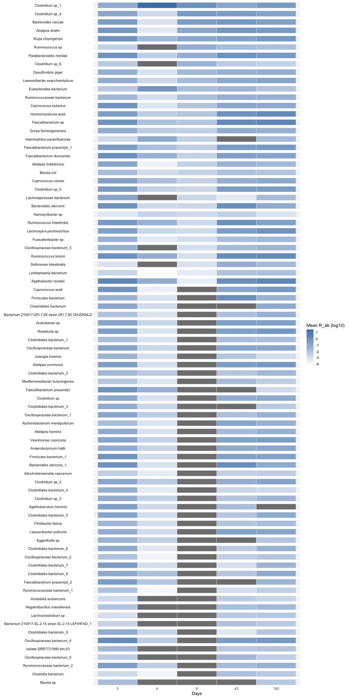
ANI model with load adjustment
save_path <- "output_rds/palleja_fit_p_95_load_adj.rds"
if(file.exists(save_path)){
fit_zib_p_load <- readRDS(save_path)
} else {
fit_zib_p_load = glmZiBFit(se = se_p, design = design, nthreads = parallel::detectCores())
saveRDS(fit_zib_p_load, save_path)
}
generate_species_plot(fit_zib_p_load)## Found 63 tophits for days4 at alpha = 0.05 using holm
## Found 18 tophits for days8 at alpha = 0.05 using holm
## Found 37 tophits for days42 at alpha = 0.05 using holm
## Found 36 tophits for days180 at alpha = 0.05 using holm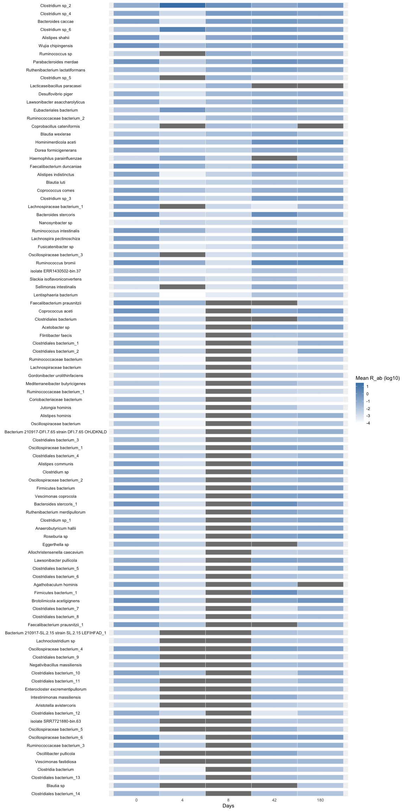
After adjusting for load, we lose many top hits, including E. coli. These were all likely driven by the reduction of overall microbial load.
Paper Figure
Strain emergence or disappearance
Let’s redo top hist using very permissive settings, i.e., use BH and alpha = 0.05. After all, these are still significant after correcting for multiple testing.
th2 = top_hits(fit_zib_q, coef = 2, method = "BH")## Found 4222 tophits for days4 at alpha = 0.05 using BHth2_ph = comp_ani_diff_and_posthoc_test(se_q, fit_zib_q, th2, nthreads = parallel::detectCores())## | | | 0% | | | 1% | |= | 1% | |= | 2% | |== | 2% | |== | 3% | |== | 4% | |=== | 4% | |=== | 5% | |==== | 5% | |==== | 6% | |===== | 6% | |===== | 7% | |===== | 8% | |====== | 8% | |====== | 9% | |======= | 9% | |======= | 10% | |======= | 11% | |======== | 11% | |======== | 12% | |========= | 12% | |========= | 13% | |========= | 14% | |========== | 14% | |========== | 15% | |=========== | 15% | |=========== | 16% | |============ | 16% | |============ | 17% | |============ | 18% | |============= | 18% | |============= | 19% | |============== | 19% | |============== | 20% | |============== | 21% | |=============== | 21% | |=============== | 22% | |================ | 22% | |================ | 23% | |================ | 24% | |================= | 24% | |================= | 25% | |================== | 25% | |================== | 26% | |=================== | 26% | |=================== | 27% | |=================== | 28% | |==================== | 28% | |==================== | 29% | |===================== | 29% | |===================== | 30% | |===================== | 31% | |====================== | 31% | |====================== | 32% | |======================= | 32% | |======================= | 33% | |======================= | 34% | |======================== | 34% | |======================== | 35% | |========================= | 35% | |========================= | 36% | |========================== | 36% | |========================== | 37% | |========================== | 38% | |=========================== | 38% | |=========================== | 39% | |============================ | 39% | |============================ | 40% | |============================ | 41% | |============================= | 41% | |============================= | 42% | |============================== | 42% | |============================== | 43% | |============================== | 44% | |=============================== | 44% | |=============================== | 45% | |================================ | 45% | |================================ | 46% | |================================= | 46% | |================================= | 47% | |================================= | 48% | |================================== | 48% | |================================== | 49% | |=================================== | 49% | |=================================== | 50% | |=================================== | 51% | |==================================== | 51% | |==================================== | 52% | |===================================== | 52% | |===================================== | 53% | |===================================== | 54% | |====================================== | 54% | |====================================== | 55% | |======================================= | 55% | |======================================= | 56% | |======================================== | 56% | |======================================== | 57% | |======================================== | 58% | |========================================= | 58% | |========================================= | 59% | |========================================== | 59% | |========================================== | 60% | |========================================== | 61% | |=========================================== | 61% | |=========================================== | 62% | |============================================ | 62% | |============================================ | 63% | |============================================ | 64% | |============================================= | 64% | |============================================= | 65% | |============================================== | 65% | |============================================== | 66% | |=============================================== | 66% | |=============================================== | 67% | |=============================================== | 68% | |================================================ | 68% | |================================================ | 69% | |================================================= | 69% | |================================================= | 70% | |================================================= | 71% | |================================================== | 71% | |================================================== | 72% | |=================================================== | 72% | |=================================================== | 73% | |=================================================== | 74% | |==================================================== | 74% | |==================================================== | 75% | |===================================================== | 75% | |===================================================== | 76% | |====================================================== | 76% | |====================================================== | 77% | |====================================================== | 78% | |======================================================= | 78% | |======================================================= | 79% | |======================================================== | 79% | |======================================================== | 80% | |======================================================== | 81% | |========================================================= | 81% | |========================================================= | 82% | |========================================================== | 82% | |========================================================== | 83% | |========================================================== | 84% | |=========================================================== | 84% | |=========================================================== | 85% | |============================================================ | 85% | |============================================================ | 86% | |============================================================= | 86% | |============================================================= | 87% | |============================================================= | 88% | |============================================================== | 88% | |============================================================== | 89% | |=============================================================== | 89% | |=============================================================== | 90% | |=============================================================== | 91% | |================================================================ | 91% | |================================================================ | 92% | |================================================================= | 92% | |================================================================= | 93% | |================================================================= | 94% | |================================================================== | 94% | |================================================================== | 95% | |=================================================================== | 95% | |=================================================================== | 96% | |==================================================================== | 96% | |==================================================================== | 97% | |==================================================================== | 98% | |===================================================================== | 98% | |===================================================================== | 99% | |======================================================================| 99% | |======================================================================| 100%th2 = th2_ph[is.na(th2_ph$Comment) | th2_ph$hit_component == "both",,]; rownames(th2) = NULL
th2 = strainspy:::add_tax2tophits(th2, tax99, columns = c("Phylum", "Genus", "Species"))
th3 = top_hits(fit_zib_q, coef = 3, method = "BH")## Found 7988 tophits for days8 at alpha = 0.05 using BHth3_ph = comp_ani_diff_and_posthoc_test(se_q, fit_zib_q, th3, nthreads = parallel::detectCores())## | | | 0% | | | 1% | |= | 1% | |= | 2% | |== | 2% | |== | 3% | |== | 4% | |=== | 4% | |=== | 5% | |==== | 5% | |==== | 6% | |===== | 6% | |===== | 7% | |===== | 8% | |====== | 8% | |====== | 9% | |======= | 9% | |======= | 10% | |======= | 11% | |======== | 11% | |======== | 12% | |========= | 12% | |========= | 13% | |========= | 14% | |========== | 14% | |========== | 15% | |=========== | 15% | |=========== | 16% | |============ | 16% | |============ | 17% | |============ | 18% | |============= | 18% | |============= | 19% | |============== | 19% | |============== | 20% | |============== | 21% | |=============== | 21% | |=============== | 22% | |================ | 22% | |================ | 23% | |================ | 24% | |================= | 24% | |================= | 25% | |================== | 25% | |================== | 26% | |=================== | 26% | |=================== | 27% | |=================== | 28% | |==================== | 28% | |==================== | 29% | |===================== | 29% | |===================== | 30% | |===================== | 31% | |====================== | 31% | |====================== | 32% | |======================= | 32% | |======================= | 33% | |======================= | 34% | |======================== | 34% | |======================== | 35% | |========================= | 35% | |========================= | 36% | |========================== | 36% | |========================== | 37% | |========================== | 38% | |=========================== | 38% | |=========================== | 39% | |============================ | 39% | |============================ | 40% | |============================ | 41% | |============================= | 41% | |============================= | 42% | |============================== | 42% | |============================== | 43% | |============================== | 44% | |=============================== | 44% | |=============================== | 45% | |================================ | 45% | |================================ | 46% | |================================= | 46% | |================================= | 47% | |================================= | 48% | |================================== | 48% | |================================== | 49% | |=================================== | 49% | |=================================== | 50% | |=================================== | 51% | |==================================== | 51% | |==================================== | 52% | |===================================== | 52% | |===================================== | 53% | |===================================== | 54% | |====================================== | 54% | |====================================== | 55% | |======================================= | 55% | |======================================= | 56% | |======================================== | 56% | |======================================== | 57% | |======================================== | 58% | |========================================= | 58% | |========================================= | 59% | |========================================== | 59% | |========================================== | 60% | |========================================== | 61% | |=========================================== | 61% | |=========================================== | 62% | |============================================ | 62% | |============================================ | 63% | |============================================ | 64% | |============================================= | 64% | |============================================= | 65% | |============================================== | 65% | |============================================== | 66% | |=============================================== | 66% | |=============================================== | 67% | |=============================================== | 68% | |================================================ | 68% | |================================================ | 69% | |================================================= | 69% | |================================================= | 70% | |================================================= | 71% | |================================================== | 71% | |================================================== | 72% | |=================================================== | 72% | |=================================================== | 73% | |=================================================== | 74% | |==================================================== | 74% | |==================================================== | 75% | |===================================================== | 75% | |===================================================== | 76% | |====================================================== | 76% | |====================================================== | 77% | |====================================================== | 78% | |======================================================= | 78% | |======================================================= | 79% | |======================================================== | 79% | |======================================================== | 80% | |======================================================== | 81% | |========================================================= | 81% | |========================================================= | 82% | |========================================================== | 82% | |========================================================== | 83% | |========================================================== | 84% | |=========================================================== | 84% | |=========================================================== | 85% | |============================================================ | 85% | |============================================================ | 86% | |============================================================= | 86% | |============================================================= | 87% | |============================================================= | 88% | |============================================================== | 88% | |============================================================== | 89% | |=============================================================== | 89% | |=============================================================== | 90% | |=============================================================== | 91% | |================================================================ | 91% | |================================================================ | 92% | |================================================================= | 92% | |================================================================= | 93% | |================================================================= | 94% | |================================================================== | 94% | |================================================================== | 95% | |=================================================================== | 95% | |=================================================================== | 96% | |==================================================================== | 96% | |==================================================================== | 97% | |==================================================================== | 98% | |===================================================================== | 98% | |===================================================================== | 99% | |======================================================================| 99% | |======================================================================| 100%th3 = th3_ph[is.na(th3_ph$Comment) | th3_ph$hit_component == "both",,]
th3 = strainspy:::add_tax2tophits(th3, tax99, columns = c("Phylum", "Genus", "Species"))
th4 = top_hits(fit_zib_q, coef = 4, method = "BH")## Found 646 tophits for days42 at alpha = 0.05 using BHth4_ph = comp_ani_diff_and_posthoc_test(se_q, fit_zib_q, th4, nthreads = parallel::detectCores())## | | | 0% | | | 1% | |= | 1% | |= | 2% | |== | 2% | |== | 3% | |== | 4% | |=== | 4% | |=== | 5% | |==== | 5% | |==== | 6% | |===== | 7% | |===== | 8% | |====== | 8% | |====== | 9% | |======= | 9% | |======= | 10% | |======= | 11% | |======== | 11% | |======== | 12% | |========= | 12% | |========= | 13% | |========== | 14% | |========== | 15% | |=========== | 15% | |=========== | 16% | |============ | 17% | |============ | 18% | |============= | 18% | |============= | 19% | |============== | 19% | |============== | 20% | |============== | 21% | |=============== | 21% | |=============== | 22% | |================ | 22% | |================ | 23% | |================ | 24% | |================= | 24% | |================= | 25% | |================== | 25% | |================== | 26% | |=================== | 26% | |=================== | 27% | |=================== | 28% | |==================== | 28% | |==================== | 29% | |===================== | 29% | |===================== | 30% | |===================== | 31% | |====================== | 31% | |====================== | 32% | |======================= | 32% | |======================= | 33% | |======================== | 34% | |======================== | 35% | |========================= | 35% | |========================= | 36% | |========================== | 37% | |========================== | 38% | |=========================== | 38% | |=========================== | 39% | |============================ | 39% | |============================ | 40% | |============================ | 41% | |============================= | 41% | |============================= | 42% | |============================== | 42% | |============================== | 43% | |=============================== | 44% | |=============================== | 45% | |================================ | 45% | |================================ | 46% | |================================= | 46% | |================================= | 47% | |================================= | 48% | |================================== | 48% | |================================== | 49% | |=================================== | 49% | |=================================== | 50% | |=================================== | 51% | |==================================== | 51% | |==================================== | 52% | |===================================== | 52% | |===================================== | 53% | |===================================== | 54% | |====================================== | 54% | |====================================== | 55% | |======================================= | 55% | |======================================= | 56% | |======================================== | 57% | |======================================== | 58% | |========================================= | 58% | |========================================= | 59% | |========================================== | 59% | |========================================== | 60% | |========================================== | 61% | |=========================================== | 61% | |=========================================== | 62% | |============================================ | 62% | |============================================ | 63% | |============================================= | 64% | |============================================= | 65% | |============================================== | 65% | |============================================== | 66% | |=============================================== | 67% | |=============================================== | 68% | |================================================ | 68% | |================================================ | 69% | |================================================= | 69% | |================================================= | 70% | |================================================= | 71% | |================================================== | 71% | |================================================== | 72% | |=================================================== | 72% | |=================================================== | 73% | |=================================================== | 74% | |==================================================== | 74% | |==================================================== | 75% | |===================================================== | 75% | |===================================================== | 76% | |====================================================== | 76% | |====================================================== | 77% | |====================================================== | 78% | |======================================================= | 78% | |======================================================= | 79% | |======================================================== | 79% | |======================================================== | 80% | |======================================================== | 81% | |========================================================= | 81% | |========================================================= | 82% | |========================================================== | 82% | |========================================================== | 83% | |=========================================================== | 84% | |=========================================================== | 85% | |============================================================ | 85% | |============================================================ | 86% | |============================================================= | 87% | |============================================================= | 88% | |============================================================== | 88% | |============================================================== | 89% | |=============================================================== | 89% | |=============================================================== | 90% | |=============================================================== | 91% | |================================================================ | 91% | |================================================================ | 92% | |================================================================= | 92% | |================================================================= | 93% | |================================================================== | 94% | |================================================================== | 95% | |=================================================================== | 95% | |=================================================================== | 96% | |==================================================================== | 96% | |==================================================================== | 97% | |==================================================================== | 98% | |===================================================================== | 98% | |===================================================================== | 99% | |======================================================================| 99% | |======================================================================| 100%th4 = th4_ph[is.na(th4_ph$Comment) | th4_ph$hit_component == "both",]
th4 = strainspy:::add_tax2tophits(th4, tax99, columns = c("Phylum", "Genus", "Species"))
th5 = top_hits(fit_zib_q, coef = 5, method = "BH")## Found 480 tophits for days180 at alpha = 0.05 using BHth5_ph = comp_ani_diff_and_posthoc_test(se_q, fit_zib_q, th5, nthreads = parallel::detectCores())## | | | 0% | | | 1% | |= | 1% | |= | 2% | |== | 2% | |== | 3% | |== | 4% | |=== | 4% | |=== | 5% | |==== | 5% | |==== | 6% | |===== | 6% | |===== | 7% | |===== | 8% | |====== | 8% | |====== | 9% | |======= | 9% | |======= | 10% | |======= | 11% | |======== | 11% | |======== | 12% | |========= | 12% | |========= | 13% | |========= | 14% | |========== | 14% | |========== | 15% | |=========== | 15% | |=========== | 16% | |============ | 16% | |============ | 17% | |============ | 18% | |============= | 18% | |============= | 19% | |============== | 19% | |============== | 20% | |============== | 21% | |=============== | 21% | |=============== | 22% | |================ | 22% | |================ | 23% | |================ | 24% | |================= | 24% | |================= | 25% | |================== | 25% | |================== | 26% | |=================== | 26% | |=================== | 27% | |=================== | 28% | |==================== | 28% | |==================== | 29% | |===================== | 29% | |===================== | 30% | |===================== | 31% | |====================== | 31% | |====================== | 32% | |======================= | 32% | |======================= | 33% | |======================= | 34% | |======================== | 34% | |======================== | 35% | |========================= | 35% | |========================= | 36% | |========================== | 36% | |========================== | 37% | |========================== | 38% | |=========================== | 38% | |=========================== | 39% | |============================ | 39% | |============================ | 40% | |============================ | 41% | |============================= | 41% | |============================= | 42% | |============================== | 42% | |============================== | 43% | |============================== | 44% | |=============================== | 44% | |=============================== | 45% | |================================ | 45% | |================================ | 46% | |================================= | 46% | |================================= | 47% | |================================= | 48% | |================================== | 48% | |================================== | 49% | |=================================== | 49% | |=================================== | 50% | |=================================== | 51% | |==================================== | 51% | |==================================== | 52% | |===================================== | 52% | |===================================== | 53% | |===================================== | 54% | |====================================== | 54% | |====================================== | 55% | |======================================= | 55% | |======================================= | 56% | |======================================== | 56% | |======================================== | 57% | |======================================== | 58% | |========================================= | 58% | |========================================= | 59% | |========================================== | 59% | |========================================== | 60% | |========================================== | 61% | |=========================================== | 61% | |=========================================== | 62% | |============================================ | 62% | |============================================ | 63% | |============================================ | 64% | |============================================= | 64% | |============================================= | 65% | |============================================== | 65% | |============================================== | 66% | |=============================================== | 66% | |=============================================== | 67% | |=============================================== | 68% | |================================================ | 68% | |================================================ | 69% | |================================================= | 69% | |================================================= | 70% | |================================================= | 71% | |================================================== | 71% | |================================================== | 72% | |=================================================== | 72% | |=================================================== | 73% | |=================================================== | 74% | |==================================================== | 74% | |==================================================== | 75% | |===================================================== | 75% | |===================================================== | 76% | |====================================================== | 76% | |====================================================== | 77% | |====================================================== | 78% | |======================================================= | 78% | |======================================================= | 79% | |======================================================== | 79% | |======================================================== | 80% | |======================================================== | 81% | |========================================================= | 81% | |========================================================= | 82% | |========================================================== | 82% | |========================================================== | 83% | |========================================================== | 84% | |=========================================================== | 84% | |=========================================================== | 85% | |============================================================ | 85% | |============================================================ | 86% | |============================================================= | 86% | |============================================================= | 87% | |============================================================= | 88% | |============================================================== | 88% | |============================================================== | 89% | |=============================================================== | 89% | |=============================================================== | 90% | |=============================================================== | 91% | |================================================================ | 91% | |================================================================ | 92% | |================================================================= | 92% | |================================================================= | 93% | |================================================================= | 94% | |================================================================== | 94% | |================================================================== | 95% | |=================================================================== | 95% | |=================================================================== | 96% | |==================================================================== | 96% | |==================================================================== | 97% | |==================================================================== | 98% | |===================================================================== | 98% | |===================================================================== | 99% | |======================================================================| 99% | |======================================================================| 100%th5 = th5_ph[is.na(th5_ph$Comment) | th5_ph$hit_component == "both",,]
th5 = strainspy:::add_tax2tophits(th5, tax99, columns = c("Phylum", "Genus", "Species"))
top_hits = rbind( data.frame(strainspy:::add_tax2tophits(th2, tax99, columns = c("Phylum", "Genus", "Species")), day = 4), # day 4
data.frame(strainspy:::add_tax2tophits(th3, tax99, columns = c("Phylum", "Genus", "Species")), day = 8), # day 8
data.frame(strainspy:::add_tax2tophits(th4, tax99, columns = c("Phylum", "Genus", "Species")), day = 42), # day 42
data.frame(strainspy:::add_tax2tophits(th5, tax99, columns = c("Phylum", "Genus", "Species")), day = 180)) # day 180
#### Some stats for the paper results ###
# Depletion counts right after exposure
th_depletion = rbind(th2[th2$hit_component == "zi" | th2$hit_component == "both",],
th3[th3$hit_component == "zi" | th3$hit_component == "both",] )
length(unique(th_depletion$Species))## [1] 1140length(unique(th_depletion$Genus))## [1] 96th_turnover = rbind(th2[th2$hit_component == "beta" | th2$hit_component == "both",],
th3[th3$hit_component == "beta" | th3$hit_component == "both",] )
length(unique(th_turnover$Species))## [1] 282length(unique(th_turnover$Genus))## [1] 60# Recovery
th_recovery = rbind(th4[th4$hit_component == "zi" | th4$hit_component == "both",],
th5[th5$hit_component == "zi" | th5$hit_component == "both",] )
length(unique(th_recovery$Species))## [1] 1length(unique(th_recovery$Genus))## [1] 1th_rec_turnover = rbind(th4[th4$hit_component == "beta" | th4$hit_component == "both",],
th5[th5$hit_component == "beta" | th5$hit_component == "both",] )
length(unique(th_rec_turnover$Species))## [1] 96length(unique(th_rec_turnover$Genus))## [1] 46contigs_to_pull = unique(top_hits$Contig_name)
asy = SummarizedExperiment::assay(se_q)
asy = as.matrix(asy[unname(sapply(contigs_to_pull, function(x) which(x == rownames(asy)))),])
ani_long <- as.data.frame(asy) %>%
tibble::rownames_to_column("Contig_name") %>%
pivot_longer(-Contig_name, names_to = "run_accession", values_to = "ANI") %>%
left_join(meta %>% select(run_accession, subject, days), by = "run_accession") %>%
mutate(
Species = top_hits$Species[match(Contig_name, top_hits$Contig_name)],
Genus = top_hits$Genus[match(Contig_name, top_hits$Contig_name)]
)
ani_filtered <- ani_long %>%
group_by(subject, Contig_name) %>%
# Keep only those with at least one non-zero ANI for that subject
filter(any(ANI != 0)) %>%
ungroup()
# look at zeros
non_zero_counts <- ani_filtered %>%
group_by(subject, Genus, days) %>%
summarise(
n_zeros = sum(ANI != 0),
n_total = n(),
prop_zero = n_zeros / n_total,
n_contigs = n_distinct(Contig_name),
.groups = "drop"
) %>%
group_by(Genus, days) %>%
summarise(
mean_prop_zeros = mean(prop_zero),
se_prop_zeros = sd(prop_zero) / sqrt(n()),
mean_zeros = mean(n_zeros),
se_zeros = sd(n_zeros) / sqrt(n()),
n_contigs_total = sum(n_contigs),
n_subjects = n_distinct(subject),
.groups = "drop"
)Use a weighted sum to detect most affected strains
# Define your kernel for depletion
# Days: 0, 4, 8, 42, 180
# Weights: 1, -1, -1, 1, 1 (High score = Depletion at days 4 & 8)
depletion_kernel <- c(1, -1, -1, 1, 1)
ani_filtered_ <- ani_filtered
ani_filtered_$days = as.numeric(ani_filtered_$days)
# Ensure data is complete and compute scores per subject
strain_stats <- ani_filtered_ %>%
complete(nesting(Contig_name, Genus, Species, subject),
days = c(0, 4, 8, 42, 180),
fill = list(ANI = 0)) %>%
arrange(days) %>%
group_by(subject, Contig_name, Genus, Species) %>%
summarise(
depletion_score = sum(ANI * depletion_kernel),
.groups = "drop"
) %>%
# Now aggregate across subjects
group_by(Contig_name, Genus, Species) %>%
summarise(
avg_score = mean(depletion_score, na.rm = TRUE),
sd_score = sd(depletion_score, na.rm = TRUE),
n_subjects = n(), # Useful to see if the strain was present in all subjects
.groups = "drop"
) %>%
arrange(desc(avg_score))## Warning: There were 96034 warnings in `summarise()`.
## The first warning was:
## ℹ In argument: `depletion_score = sum(ANI * depletion_kernel)`.
## ℹ In group 1: `subject = 1`, `Contig_name = "AFYM01000001.1 Lacticaseibacillus
## casei A2-362 ctg001_00010, whole genome shotgun sequence"`, `Genus =
## "Lacticaseibacillus"`, `Species = "Lacticaseibacillus paracasei"`.
## Caused by warning in `ANI * depletion_kernel`:
## ! longer object length is not a multiple of shorter object length
## ℹ Run `dplyr::last_dplyr_warnings()` to see the 96033 remaining warnings.Visualise interesting variations of species within genera
genus_dist = function(selected_genera){
selected_species = unique(ani_filtered$Species[ani_filtered$Genus == selected_genera])
# get genera counts in the database
species_totals <- tax99 %>%
filter(Species %in% selected_species) %>%
distinct(Species, Genome) %>% # unique strain × genus pairs
group_by(Species) %>%
summarize(total_strains = n(), .groups = "drop") %>%
complete(Species = selected_species, fill = list(total_strains = 0))
day_levels <- c("0","4","8","42","180")
presence_df <- ani_filtered %>%
filter(Species %in% selected_species) %>%
mutate(days = factor(as.character(days), levels = day_levels),
present = ANI > 95) %>%
# count unique contig names per Genus x subject x day where present == TRUE
group_by(Species, subject, days) %>%
summarize(n_strains = n_distinct(Contig_name[present]), .groups = "drop")
prop_df <- presence_df %>%
left_join(species_totals, by = "Species") %>%
mutate(
# avoid division by zero: if genus has zero total strains, produce NA
prop_of_species = if_else(total_strains > 0,
n_strains / total_strains,
NA_real_)
)
baseline <- prop_df %>%
group_by(Species, subject) %>%
summarize(
prop0 = max(prop_of_species, na.rm = TRUE), # highest proportion across all days
.groups = "drop"
)
prop_df2 <- prop_df %>%
left_join(baseline, by = c("Species", "subject"))
prop_df2 <- prop_df2 %>%
mutate(
ratio = if_else(!is.na(prop0) & prop0 > 0,
prop_of_species / prop0,
NA_real_), # baseline-0 subjects → NA
ratio = pmin(ratio, 1) # cap at 1 so colour means "as present as baseline"
)
summary_ratio <- prop_df2 %>%
group_by(Species, days) %>%
summarize(
mean_ratio = mean(ratio, na.rm = TRUE),
se_ratio = sd(ratio, na.rm = TRUE) / sqrt(sum(!is.na(ratio))),
n_subj = sum(n_strains>0),
.groups = "drop"
) %>%
mutate(days = factor(as.character(days), levels = c("0","4","8","42","180")))
# Order genera by effect (optional)
order_species <- summary_ratio %>% filter(days == "8") %>% arrange(mean_ratio) %>% pull(Species) %>% unique()
summary_ratio <- summary_ratio %>% mutate(Species = factor(Species, levels = rev(order_species)))
# Plot: white -> single colour; limits [0,1]; NA and 0 appear white
ggplot(summary_ratio, aes(x = days, y = Species, fill = n_subj)) +
geom_tile(color = "grey90", size = 0.3) +
geom_text(aes(label = sprintf("%d", n_subj)),
size = 6) +
scale_fill_gradient(
low = "white",
high = "#2A6EBBFF", # pick a single strong colour
limits = c(0, 12),
na.value = "white",
name = "Strains Present"
) +
labs(x = "Days", y = NULL) +
theme_minimal(base_size = 15) +
theme(panel.grid = element_blank(),
axis.text.x = element_text(angle = 45, hjust = 1))
}
# Few strong signals to see here:
# B. dentium goes up while others go down and slowly recover
genus_dist("Bifidobacterium")## Warning: Using `size` aesthetic for lines was deprecated in ggplot2 3.4.0.
## ℹ Please use `linewidth` instead.
## This warning is displayed once per session.
## Call `lifecycle::last_lifecycle_warnings()` to see where this warning was
## generated.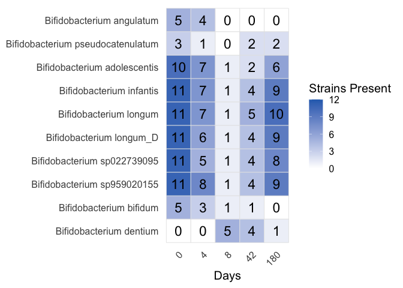
# R. gnavus goes up while other Ruminococci go down and recover
genus_dist("Ruminococcus_B")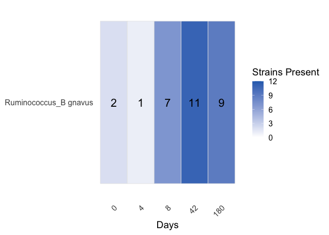
genus_dist("Ruminococcus_E")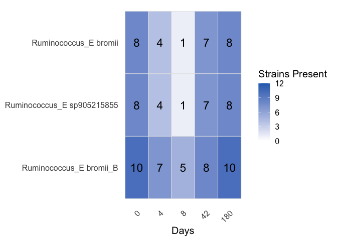
# C leptum (A well known good bacteria) disappears shortly, C innocuum/saudiense (pathobionts) go up.
# We might be looking at wrong strains here, but the pattern is clear.
genus_dist("Clostridium_A")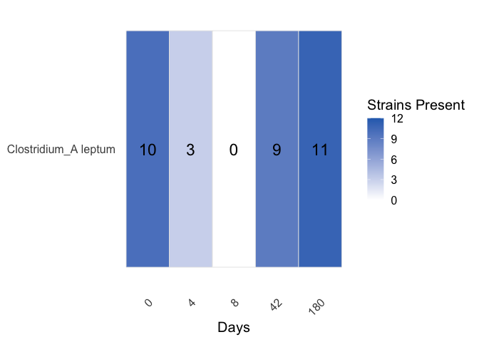
genus_dist("Clostridium")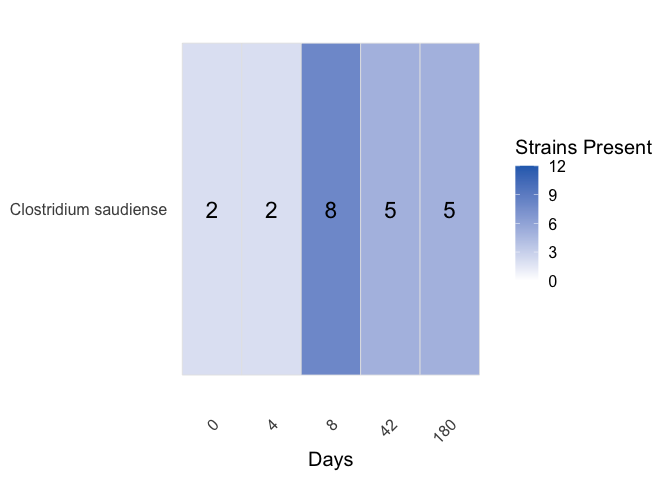
genus_dist("Clostridium_AQ")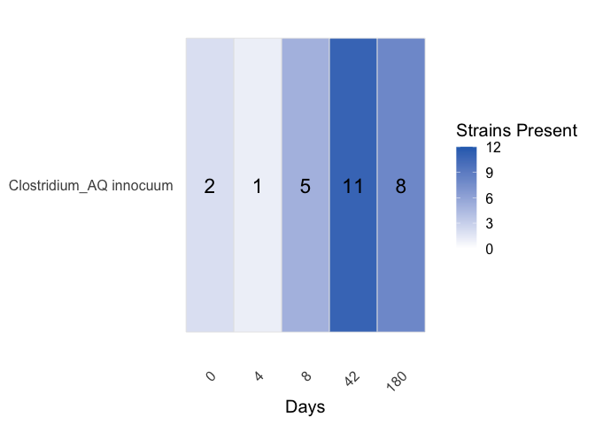
Check for abundance signal
plot_avg_abundance = function(asy_mx, meta){
# 1. Pivot and Join (as before)
combined_data <- asy_mx %>%
as.data.frame() %>%
tibble::rownames_to_column("Species") %>%
pivot_longer(-Species, names_to = "run_accession", values_to = "Abundance") %>%
inner_join(meta, by = "run_accession")
# 2. Average across subjects for each Day
final_summary <- combined_data %>%
group_by(Species, days) %>%
summarise(
avg_abundance = mean(Abundance, na.rm = TRUE),
sem = sd(Abundance, na.rm = TRUE) / sqrt(n()),
n_subjects = n_distinct(subject), # Confirming data from all 10 subjects
.groups = "drop"
) %>%
arrange(Species, days)
mapping <- data.frame(
Species = unique(final_summary$Species),
name_fix = strainspy:::clean_contig_names(unique(final_summary$Species))
)
final_summary <- final_summary %>%
left_join(mapping, by = "Species")
ggplot(final_summary, aes(x = factor(days), y = avg_abundance, color = name_fix, fill = name_fix, group = name_fix)) +
# The ribbon now uses the 'fill' aesthetic to match the line color
geom_ribbon(aes(ymin = avg_abundance - sem, ymax = avg_abundance + sem), alpha = 0.2, color = NA) +
geom_line(size = 1.2) +
geom_point(size = 3) +
facet_wrap(~name_fix, nrow = 1) + # 'free_y' helps see spikes in rare species
theme_minimal() +
scale_color_viridis_d(option = "turbo") +
scale_fill_viridis_d(option = "turbo") +
# This removes the legend entirely
theme(legend.position = "none") +
labs(
x = "Day",
y = "Average Percentage Relative Abundance",
title = "Species Abundance Dynamics (Mean ± SEM)"
)
}
# Species level signals
se_p_abud = cleanup(read_sylph("data/palleja_ab_recovery/combined_p_95.tsv", variable = 'Taxonomic_abundance'), meta)## Detected Sylph profile output file.
## Retained 371 rows after subject-aware filteringse_p_assay_bifid = as.matrix(SummarizedExperiment::assay(se_p_abud[rownames(se_p_abud)[grep("Bifidobacterium", rownames(se_p_abud))],]))
plot_avg_abundance(se_p_assay_bifid, meta)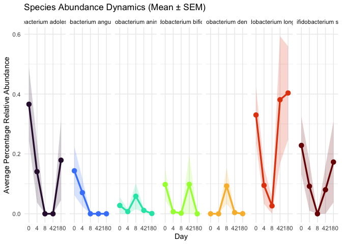
se_p_assay_rum = as.matrix(SummarizedExperiment::assay(se_p_abud[rownames(se_p_abud)[grep("Ruminococcus", rownames(se_p_abud))],]))
plot_avg_abundance(se_p_assay_rum, meta)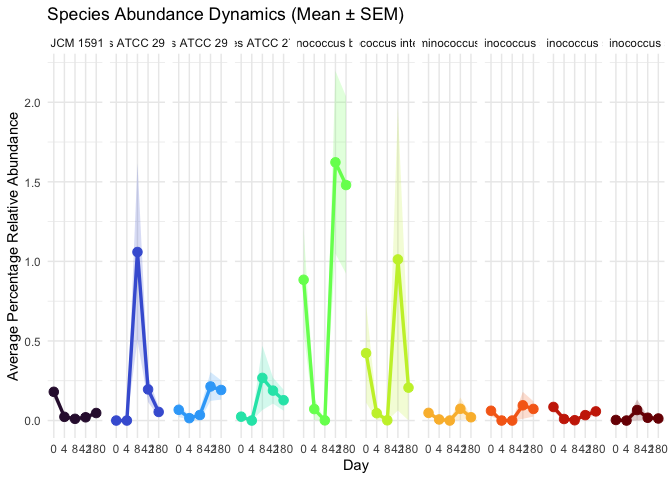
se_p_assay_clos = rbind(as.matrix(SummarizedExperiment::assay(se_p_abud[rownames(se_p_abud)[grep("leptum", rownames(se_p_abud))],])),
as.matrix(SummarizedExperiment::assay(se_p_abud[rownames(se_p_abud)[grep("innocuum", rownames(se_p_abud))],])),
as.matrix(SummarizedExperiment::assay(se_p_abud[rownames(se_p_abud)[grep("saudiense", rownames(se_p_abud))],])))
plot_avg_abundance(se_p_assay_clos, meta)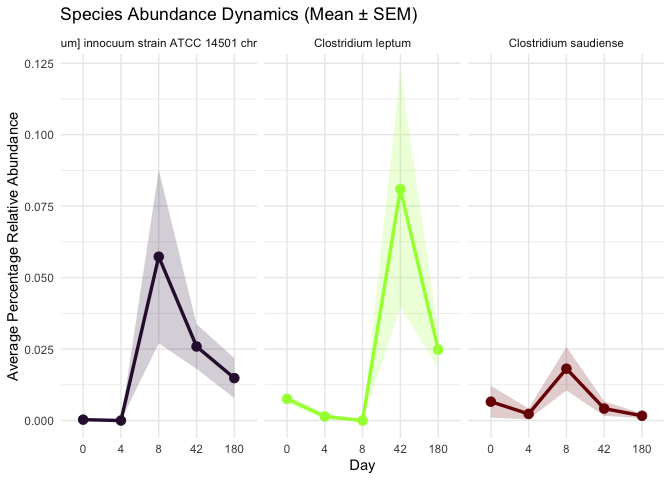
Fate of Short-chain fatty acid producing genera
scfa_genera <- c(
"Faecalibacterium", # classic butyrate producer
"Agathobacter", # Eubacterium rectale group
"Anaerobutyricum", # E. hallii group
"Anaerostipes", # strong butyrate producer
"Roseburia", # hallmark butyrate producer
"Blautia_A", # butyrate/acetate producer
"Fusicatenibacter", # secondary butyrate producer
"Ruminococcus_E" # butyrate producer
)
sfca_non_zeros <- non_zero_counts %>% filter(Genus %in% scfa_genera)
set.seed(25); cols <- ggsci::pal_bmj()(length(unique(sfca_non_zeros$Genus)))
ggplot(sfca_non_zeros, aes(x = days, y = mean_prop_zeros, color = Genus, group = Genus)) +
geom_line(size = 1) +
geom_point(size = 2) +
geom_errorbar(aes(ymin = mean_prop_zeros - se_prop_zeros, ymax = mean_prop_zeros + se_prop_zeros),
width = 0.2, alpha = 0.6) +
scale_x_discrete(breaks = sort(unique(sfca_non_zeros$days))) +
scale_color_manual(values = cols) +
labs(
x = "Sample day",
y = "Fraction of strain presence",
color = "Genus"
) +
theme(
legend.position = "right",
panel.grid.minor = element_blank(),
plot.title = element_text(face = "bold")
) +
theme_clean(base_size = 14)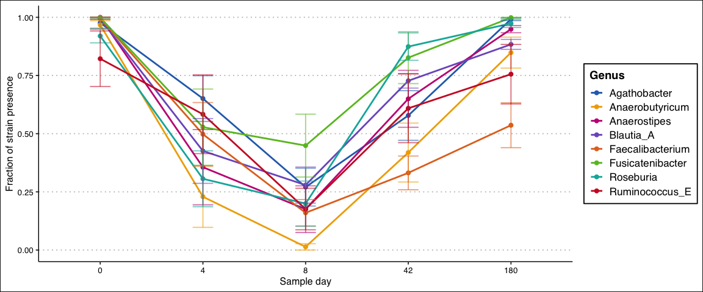
Fate of some oppotunistic bacteria
opportunistic_genera <- c(
"Clostridium",
"Clostridium_AQ",
"Klebsiella",
"Escherichia" # E. coli and related, classic opportunist
)
opp_non_zeros <- non_zero_counts %>% filter(Genus %in% opportunistic_genera)
set.seed(25); cols <- ggsci::pal_bmj()(length(opportunistic_genera))[sample(length(unique(opp_non_zeros$Genus)))]
ggplot(opp_non_zeros, aes(x = days, y = mean_prop_zeros, color = Genus, group = Genus)) +
geom_line(size = 1) +
geom_point(size = 2) +
geom_errorbar(aes(ymin = mean_prop_zeros - se_prop_zeros, ymax = mean_prop_zeros + se_prop_zeros),
width = 0.2, alpha = 0.6) +
scale_x_discrete(breaks = sort(unique(opp_non_zeros$days))) +
scale_color_manual(values = cols) +
labs(
x = "Sample day",
y = "Fraction of strain presence",
color = "Genus"
) +
theme_clean(base_size = 14) +
theme(
legend.position = "right",
panel.grid.minor = element_blank(),
plot.title = element_text(face = "bold")
)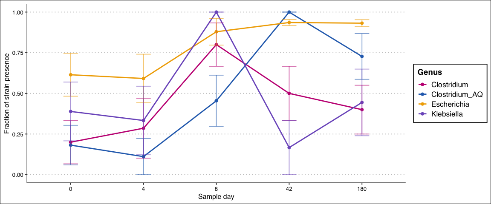
Visualise as a heatmap
Butyrate_genera <- c(
"Holdemanella",
"Anaerostipes",
"Roseburia",
"Faecalibacterium", # classic butyrate producer
"Agathobacter", # Eubacterium rectale group
"Anaerobutyricum", # E. hallii group
"Anaerostipes", # strong butyrate producer
"Roseburia", # hallmark butyrate producer
"Blautia_A", # butyrate/acetate producer
"Fusicatenibacter", # secondary butyrate producer
"Ruminococcus_E" # butyrate producer
)
opp_genera = opportunistic_genera <- c(
"Clostridium",
"Clostridium_AQ",
"Klebsiella",
"Escherichia",
"Ruminococcus_B",
"Eggerthella",
"Bifidobacterium"
)
{
selected_genera = c(Butyrate_genera, opp_genera)
# get genera counts in the database
genus_totals <- tax99 %>%
filter(Genus %in% selected_genera) %>%
distinct(Genus, Genome) %>% # unique strain × genus pairs
group_by(Genus) %>%
summarize(total_strains = n(), .groups = "drop") %>%
complete(Genus = selected_genera, fill = list(total_strains = 0))
day_levels <- c("0","4","8","42","180")
presence_df <- ani_filtered %>%
filter(Genus %in% selected_genera) %>%
mutate(days = factor(as.character(days), levels = day_levels),
present = ANI > 95) %>%
# count unique contig names per Genus x subject x day where present == TRUE
group_by(Genus, subject, days) %>%
summarize(n_strains = n_distinct(Contig_name[present]), .groups = "drop")
prop_df <- presence_df %>%
left_join(genus_totals, by = "Genus") %>%
mutate(
# avoid division by zero: if genus has zero total strains, produce NA
prop_of_genus = if_else(total_strains > 0,
n_strains / total_strains,
NA_real_)
)
baseline <- prop_df %>%
group_by(Genus, subject) %>%
summarize(
prop0 = max(prop_of_genus, na.rm = TRUE), # highest proportion across all days
.groups = "drop"
)
prop_df2 <- prop_df %>%
left_join(baseline, by = c("Genus", "subject"))
prop_df2 <- prop_df2 %>%
mutate(
ratio = if_else(!is.na(prop0) & prop0 > 0,
prop_of_genus / prop0,
NA_real_), # baseline-0 subjects → NA
ratio = pmin(ratio, 1) # cap at 1 so colour means "as present as baseline"
)
summary_ratio <- prop_df2 %>%
group_by(Genus, days) %>%
summarize(
mean_ratio = mean(ratio, na.rm = TRUE),
se_ratio = sd(ratio, na.rm = TRUE) / sqrt(sum(!is.na(ratio))),
n_subj = sum(!is.na(ratio)),
.groups = "drop"
) %>%
mutate(days = factor(as.character(days), levels = c("0","4","8","42","180")))
# Order genera by effect (optional)
order_genus <- summary_ratio %>% filter(days == "8") %>% arrange(mean_ratio) %>% pull(Genus) %>% unique()
summary_ratio <- summary_ratio %>% mutate(Genus = factor(Genus, levels = rev(order_genus)))
# Plot: white -> single colour; limits [0,1]; NA and 0 appear white
ggplot(summary_ratio, aes(x = days, y = Genus, fill = mean_ratio)) +
geom_tile(color = "grey90", size = 0.3) +
scale_fill_gradient(
low = "white",
high = cols[2], # pick a single strong colour
limits = c(0, 1),
na.value = "white",
name = "Strains Present"
) +
labs(x = "Days", y = NULL) +
theme_minimal(base_size = 15) +
theme(panel.grid = element_blank(),
axis.text.x = element_text(angle = 45, hjust = 1))
}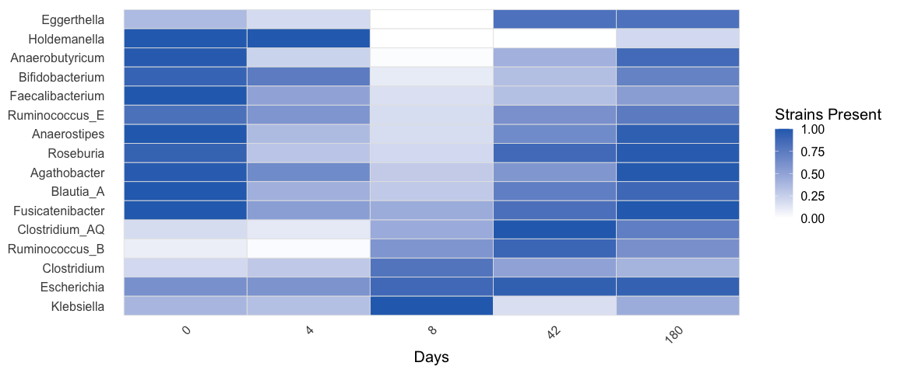
Strain replacement
bact_filt_out = function(genus){
bact <- top_hits[grep(genus, top_hits$Genus),]
bact = bact[which(bact$p_adjust < 0.05),]
bact = bact[order(bact$p_adjust),]
bact_to_pull = unique(bact$Contig_name)
asy = SummarizedExperiment::assay(se_q)
asy = as.matrix(asy[unname(sapply(bact_to_pull, function(x) which(x == rownames(asy)))),])
bact_long <- as.data.frame(asy) %>%
tibble::rownames_to_column("Contig_name") %>%
pivot_longer(-Contig_name, names_to = "run_accession", values_to = "ANI") %>%
left_join(meta %>% select(run_accession, subject, days), by = "run_accession") %>%
mutate(
Species = top_hits$Species[match(Contig_name, top_hits$Contig_name)],
Genus = top_hits$Genus[match(Contig_name, top_hits$Contig_name)]
)
bact_filtered <- bact_long %>%
group_by(subject, Contig_name) %>%
# Keep only those with at least one non-zero ANI for that subject
filter(any(ANI != 0)) %>%
ungroup() %>%
group_by(Contig_name, subject) %>%
mutate(
ANI_day0 = ANI[days == 0], # baseline for that contig+subject
ANI_relative = ANI - ANI_day0 # drop or gain relative to day0
) %>%
ungroup() %>%
filter(abs(ANI_relative)< 10 & abs(ANI_relative) > 1)
return(bact_filtered)
}
bact_filtered = bact_filt_out("Bacteroides")
contigs_subset <-names(sort(table(bact_filtered$Contig_name), decreasing = T))[c(9, 11, 26)]
ct_to_check = contigs_subset
bact_filtered = bact_filt_out("Alistipes")
contigs_subset <-names(sort(table(bact_filtered$Contig_name), decreasing = T))[c(3)]
ct_to_check = c(ct_to_check, contigs_subset)
bact_filtered = bact_filt_out("Veillonella")
contigs_subset <-names(sort(table(bact_filtered$Contig_name), decreasing = T))[c(8,2)]
ct_to_check = c(ct_to_check, contigs_subset)
bact_filtered = bact_filt_out("Prevotella")
contigs_subset <-names(sort(table(bact_filtered$Contig_name), decreasing = T))[c(2)]
ct_to_check = c(ct_to_check, contigs_subset)
bact <- top_hits
bact = bact[which(bact$p_adjust < 0.05),]
bact = bact[order(bact$p_adjust),]
bact_to_pull = unique(bact$Contig_name)
asy = SummarizedExperiment::assay(se_q)
asy = as.matrix(asy[unname(sapply(bact_to_pull, function(x) which(x == rownames(asy)))),])
bact_long <- as.data.frame(asy) %>%
tibble::rownames_to_column("Contig_name") %>%
pivot_longer(-Contig_name, names_to = "run_accession", values_to = "ANI") %>%
left_join(meta %>% select(run_accession, subject, days), by = "run_accession") %>%
mutate(
Species = top_hits$Species[match(Contig_name, top_hits$Contig_name)],
Genus = top_hits$Genus[match(Contig_name, top_hits$Contig_name)]
)
bact_filtered <- bact_long %>%
group_by(subject, Contig_name) %>%
# Keep only those with at least one non-zero ANI for that subject
filter(any(ANI != 0)) %>%
ungroup() %>%
group_by(Contig_name, subject) %>%
mutate(
ANI_day0 = ANI[days == 0], # baseline for that contig+subject
ANI_relative = ANI - ANI_day0 # drop or gain relative to day0
) %>%
ungroup() %>%
filter(abs(ANI_relative)< 10 & abs(ANI_relative) > 1)
ct_to_check_ = ct_to_check[c(1, 5, 4)]
# All hits with very small beta p-values indicate strain replacement, but we also track strain disappearances. Let's try to keep strains that persist
df_plot <- bact_long %>%
filter(Contig_name %in% ct_to_check_, ANI > 0)
df_plot$Contig_name = factor(df_plot$Contig_name, levels = ct_to_check_ )
for(i in 1:nrow(df_plot)){
df_plot$Species[i] = paste(df_plot$Species[i], str_extract(df_plot$Contig_name[i], "^[^ ]+"))
}
df_plot$Species = factor(df_plot$Species, levels = unique(df_plot$Species) )
ggplot(df_plot, aes(x = factor(days), y = ANI, group = subject, color = subject)) +
geom_point(size = 3, alpha = 0.8) + # points per subject/day
geom_line(size = 1) + # lines connecting days per subject
scale_color_manual(values = c(
"#D55E00", # reddish-orange
"#0072B2", # deep blue
"#009E73", # teal/green
"#CC79A7", # magenta
"#F0E442", # yellow
"#E69F00", # orange
"#56B4E9", # sky blue
"#999999", # gray
"#A6761D", # brown
"#66CC99", # mint
"#CC6666", # muted red
"#6699CC" # muted blue
)) +
facet_wrap(~Species, scales = "free_x") +
labs(x = "Day", y = "ANI", color = "Subject") +
theme(axis.text.x = element_text(hjust = 0.5)) +
theme_clean(base_size = 14)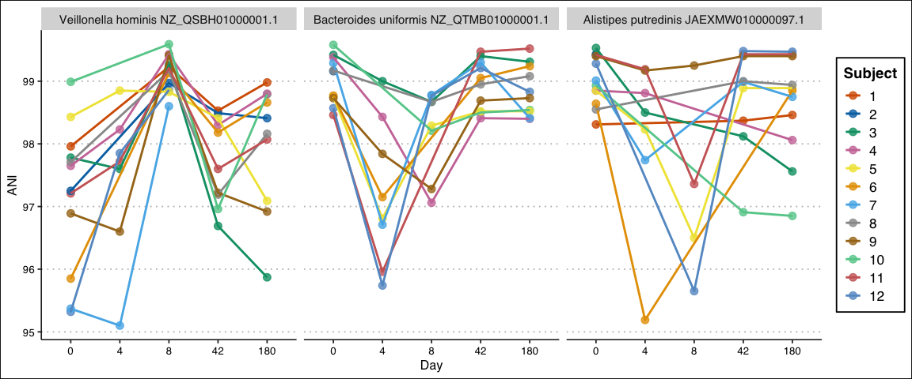
# Strain replacement p-values for these three strains: 4.664351e-12 4.011619e-08 3.600068e-05
df_plot_sd = df_plot %>% group_by(Species,days) %>% summarise(sd_ANI = sd(ANI))## `summarise()` has regrouped the output.
## ℹ Summaries were computed grouped by Species and days.
## ℹ Output is grouped by Species.
## ℹ Use `summarise(.groups = "drop_last")` to silence this message.
## ℹ Use `summarise(.by = c(Species, days))` for per-operation grouping
## (`?dplyr::dplyr_by`) instead.ggplot(df_plot_sd, aes(x = days, y = sd_ANI)) +
geom_col(width = 0.7, fill = "grey70") +
facet_wrap(~Species, scales = "free_y") +
labs(x = "Day", y = "SD of ANI") +
theme_minimal(base_size = 14) +
theme(
strip.text = element_text(face = "bold"),
axis.text.x = element_text(angle = 45, hjust = 1)
) +
geom_text(aes(label = sprintf("%.2f", sd_ANI)),
vjust = -0.3, size = 3)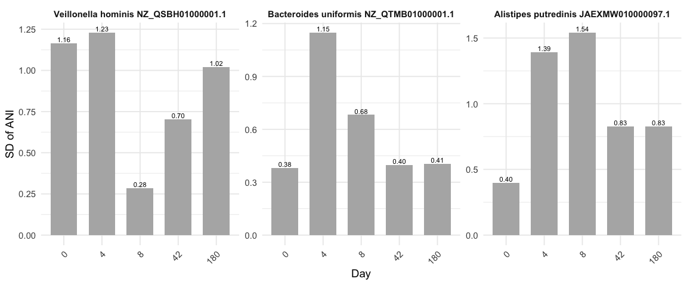
Paper Figures
## Supplementary abundance
## SFCA_Producers
se_p_assay_fp = as.matrix(SummarizedExperiment::assay(se_p_abud[rownames(se_p_abud)[grep("prausnitzii", rownames(se_p_abud))],]))
plot_avg_abundance(se_p_assay_fp, meta)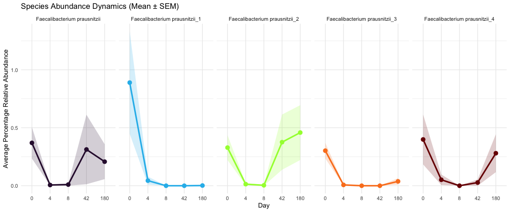
se_p_assay_bl = as.matrix(SummarizedExperiment::assay(se_p_abud[rownames(se_p_abud)[grep("Bifidobacterium", rownames(se_p_abud))],]))
plot_avg_abundance(se_p_assay_bl, meta)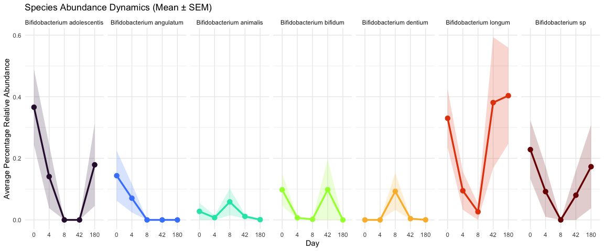
strain_dist = function(selected_strains){
idx_list = sapply(selected_strains, function(x) grep(x, ani_filtered$Contig_name))
chose_idx = unname(unlist(idx_list))
ani_filtered_ss = ani_filtered[chose_idx,]
ani_filtered_ss$strain = rep(selected_strains, times = unlist(lapply(idx_list, length)))
day_levels <- c("0","4","8","42","180")
# 12 subjects on all days except 4 (9)
ani_filtered_ss$n_tot_subj = ifelse(ani_filtered_ss$days == 4, 9, 12)
presence_df <- ani_filtered_ss %>%
mutate(days = factor(as.character(days), levels = day_levels),
present = ANI > 95) %>%
# count unique contig names per Genus x subject x day where present == TRUE
group_by(Species, subject, days) %>%
summarize(n_strains = n_distinct(Contig_name[present]),
n_tot_subj = unique(n_tot_subj),
strain = unique(strain),
.groups = "drop")
summary_ratio <- presence_df %>%
group_by(days, Species) %>%
summarize(
Species = unique(Species),
mean_ratio = sum(n_strains)/unique(n_tot_subj),
n_subj = sum(n_strains),
strain = unique(strain),
.groups = "drop"
) %>%
mutate(days = factor(as.character(days), levels = c("0","4","8","42","180")))
# Order genera by effect (optional)
order_species <- summary_ratio %>% filter(days == "8") %>% arrange(mean_ratio) %>% pull(Species) %>% unique()
summary_ratio <- summary_ratio %>% mutate(Species = factor(Species, levels = rev(order_species)))
# Plot: white -> single colour; limits [0,1]; NA and 0 appear white
summary_ratio$strain = factor(summary_ratio$strain, levels = rev(selected_strains))
ggplot(summary_ratio, aes(x = days, y = strain, fill = mean_ratio)) +
geom_tile(color = "grey90", size = 0.3) +
geom_text(aes(label = sprintf("%d", n_subj)),
size = 6) +
scale_fill_gradient(
low = "white",
high = "#2A6EBBFF", # pick a single strong colour
limits = c(0, 1),
na.value = "white",
name = "Prevalence"
) +
labs(x = "Days", y = NULL) +
theme_minimal(base_size = 15) +
theme(panel.grid = element_blank(),
axis.text.x = element_text(angle = 45, hjust = 1))
}
### ANI presence/absence for following species
## Competition picture
# Bif longum "NC_014656.1", Bif dentium "NZ_CP072503.1"
# Rum bromii "SFJY01000034.1", Rum gnavus "CATXMW010000001.1"
# Clos leptum "CABIYC010000001.1", Clos innocuum "CANBFG010000001.1"
## SFCA Picture
# F prausnitzii: CABMFC010000001.1 gone
# F prausnitzii: NC_021020.1 returned
## Oppotunitists
# Klebs "NZ_JAQDCG010000001.1"
# E coli "NZ_CP104500.1"
strain_dist(c("NC_014656.1", "NZ_CP072503.1",
"SFJY01000034.1", "CATXMW010000001.1",
"CABIYC010000001.1", "CANBFG010000001.1",
"CABMFC010000001.1", "NC_021020.1",
"NZ_JAQDCG010000001.1",
"NZ_CP104500.1"))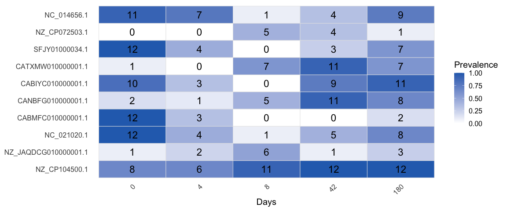